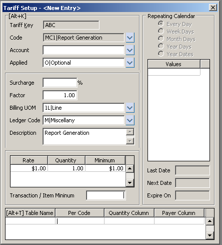

Defining Rates for Charges¶

Rate Overview¶
Rate records define charges for the warehouse services which are invoiced to customers. A charge cannot be applied to a document, transaction, or action without a rate record defining the charge.
WARES rate definitions allow a company to bill all types of services according to standard industry practices. When writing a proposal or contract, rates should be entered here to verify that the proposal is consistent with industry norms and can be implemented as intended within the WARES software.
Scope of Rates¶
Warehouse services are defined by the warehouse company service codes. Each rate relates to eactly one service code.
A rate group determines the scope of a rate.
- Rates in the GLOBAL group apply across all accounts, and the account entry for GLOBAL rates is null and protected. There can be no more than one global rate for any service.
- Rates gouped by account identifier apply to only one warehouse customer account, and the account entry of these rates is filled with the account identifier and protected. There can be no more than one account rate for any service.
- Rates may be assigned a group code different than an account identifier or GLOBAL. The account entry must be the same for all rates in the group. If the account entry is left blank on a rate group, those rates can be applied to any account. If the account entry is filled, the rates will be restricted to that account.
Many rate records may refer to the same service code, and an account may have more than one rate for a service, provided the rates are in differing groups. For example, there should be different recurring storage rates for cartons on pallets stacked 3 high than for supersacks stacked 2 high. This would require two separate rate groups associated with the account.
Rate records may be associated with a single account, or may be applied globally to all accounts. There can be no more than one GLOBAL rate for any service. Where an account or group has a specific rate for a service, the group’s rate will override a corresponding GLOBAL rate with the same service code.
Rates may be restricted to apply on specific documents. For example, receiving storage would apply to warehouse receipts only.
Applying Rates¶
A rate is used to apply charges in one of four ways:
- Repeating rates may create separate charge entries according to a calendar schedule. Repeating charges have fixed rates and quantities, so the charge is always the same. Calendar selections for repeating charges are for daily or daily within the open billing month, weekdays on specific days, monthdays on specific numbered days or on LAST or FIRST days, and year days (Julian) or year dates.
- Calculated rates apply warehouse storage and handling charges to products on warehouse receipts and optionally shipments (for outbound handling), and to calculate charges for recurring product balances.
- Mandatory rates may create charges on any documents, with calculation quantities based on a broad range of options. For example, a document fee could be applied for every shipment, while a line pick fee might be applied for every line item after the third one.
- Optional rates are used to apply charges where either the occurrence, the quantity, or the rate cannot be determined programmatically. As an example, a charge for replacing a pallet shell and restacking goods would be optional, as this activity cannot be anticipated.
Only optional rates can be used in entering charges, as all other rates are applied by billing calculation. Optional charges must be entered on documents prior to performing calculated billing.
Setting Up Rates¶
The Rate Setup page is divided into three sections: Identifying Information, Billing Information, and Calendar Information.
Identifying entries:¶
| Entry | M | Permitted entries |
|---|---|---|
| Rate Group | M | An account identifier, a grouping code, or GLOBAL |
| Service Code | M | Select from a list of warehouse service codes |
| Account | Active warehouse customer, left blank for GLOBAL | |
| Applied | M | (R)epeating, (C)alculated, (M)andatory, or (O)ptional |
Rate identifiers are made of two parts: a Rate Group and a Service Code. The Rate Group entry can be either the word GLOBAL, an account identifier, or a user-defined rate group.
Service Code may be selected from the warehouse service codes list.
The Account entry will be filled for rate records which are in an account group, and it will be null for GLOBAL rates.
A rate may Apply in one of four ways: Optional, Mandatory, Calculated, or Repeating. The service code determines which rates are Calculated or Repeating, and the Apply code is filled and protected accordingly. Use the options to select Optional or Mandatory for other service codes. Optional rates are applied through user entry, while charges for mandatory rates are created by billing calculations. Calculated rates are applied through special routines. Finally, Repeating rates create charge records and accumulate charges based on the repeating rate’s schedule.
Billing Information¶
—
ENTERING TARIFFS:
Tariffs may be modified or added at any time. A tariff should not be edited or deleted when open transactions exist with the charge applied to them. Please refer to CONSIDERATIONS WHEN ENTERING TARIFFS before entering tariffs for the first time.
The Surcharge field is used to enter surcharge information for high value goods or a tax rate. Enter a percentage, not a decimal value.
The Factor field converts between program quantities and billing quantities. The default value is 1.00 and this is the usual entry. However, certain quantities require other entries. If a product is received by the pound and billed by the hundredweight, then the Factor in 100. If it is billed by ton, then the factor is 2,000.
- Select a Billing UOM (unit of measure) from the drop down box or enter the code.
- This information appears on the invoice.
The Ledger Code field fills in automatically based on the tariff code setup.
The Description field is user-defined and should be meaningful to the customer receiving the invoice. Press [Ctrl+T] to use the zoom text feature.
Next, enter the Rate to be charged for this tariff. Where a rate for a particular charge is variable, the Rate field may be left blank and entered manually each time the charge is applied; or enter the most commonly found rate and override the default when applied. If this is a tiered rate, enter a Quantity amount for this rate. Enter the Minimum charge per line item here. When a charge may apply to multiple items on a transaction, and an overall minimum for the charge on the transaction is required, enter this minimum in the Transaction/Item Minimum field.
The Table Name column defines which type of transaction the charge can be applied to. To allow the charge to be applied to ALL transactions, leave this field blank.
The Per Code determines how the charge is extended. For example a Per Transaction charge will be extended once when applied, whereas a Per Piece will be multiplied by the number of pieces on the affected transaction. When the Table name is left blank, The Per unit must be blank also.
The Quantity Column contains dictionary element names which may be real data fields or symbolic dictionary names. The application automatically fills in the default as defined on Per Code control window. The user may make other entries as well.
When someone other than the Account is to receive the invoice for these charges, enter the Payer Key or a dictionary element which will return the key. The Payer Column is usually blank, in which case the Account for this tariff receives the invoice.
CALENDAR INFORMATION:
Repeating tariffs may be applied by Every Day, Week Days, Month Days, Year Days, and Year Dates. Select the appropriate radio button for this tariff. Next, enter the desired Values for this schedule. Enter a Last Date value to specify when the tariff will start to be applied, and enter an Expire Date if the tariff should be discontinued. Next Date is calculated by the system based on the other entries.
CONSIDERATIONS WHEN ENTERING TARIFFS:
Before any tariffs are entered, one must decide what services are being offered and what the default, or retail, rates are for those services. When defining a list of services, do not over-generalize. For example, do not lump all labor services into a single heading, when they can be broken down into specific activities such as RESTACKING, PACKAGING, RELOCATING, and so forth.
Global Tariffs: Once your business services are identified, enter a global tariff for each optional service using the highest rate charged. These tariff records should be grouped under one tariff name, for example, tariff “GLOBAL”. Leave the Account blank on these records, and set Apply to “Optional”. These Tariffs may be applied by hand on any account.
Override Tariffs: For negotiated rates on each account, use the account identifier as the Tariff Key and enter the same code as the global service code for that service. Enter the Account identifier in the Account field as well. This causes the negotiated tariff to override the global rates for a service.
Mandatory Tariffs: Where a transaction should always generate a charge, enter a tariff for the service with Apply set to “Mandatory”. Then a charge will be added to each specified transaction on the tariffed account. Generally Mandatory tariffs should be assigned to specific accounts. Mandatory tariffs are applied during Charges Calculation, or when changing a record’s status to billed.
Repeating Tariffs: When a charge is not based on a transaction, but is applied periodically instead, the tariff for the charge should be made repeating. Charge records for repeating tariffs are created during Charges Calculation, when either “Only” or “Also”” is entered for “Apply Repeating Charges”. Repeating tariffs are applied based on the tariff schedule.
An example of a repeating tariff would be a lease charge. This charge might be created on the first day of the month for the current month (current), on the last day of the month for the future month (advance), or on the last day of the month for the current month (arrears). The schedule would be based on “MONTHDAYS”, using the date value of “FIRST” for current billing and “LAST” for either advance or arrears billing.
Calculated Tariffs: Frequently charges are calculated based on discounts, prorating, and other considerations. Rates for these tariffs are defined in the tariffs window, but special input parameters and billing calculations may be necessary to calculate these charges. When charges are calculated by special routines, the corresponding tariffs must be applied as “Calculated”. An example of calculated tariffs is the storage and handling charges in a warehousing module.
Multiple Tariffs: Typically optional and mandatory tariff codes are assigned by account, while calculated tariffs are often assigned based on a grouping within an account. A particular calculated tariff name may require multiple codes in an account.
For example, a warehouse may charge customers three different storage rates depending on whether the goods are stored dry, cooled, or frozen. Then each account might have three storage tariffs. For account “ABC”, these three tariffs would each using code “1S” for storage. The tariff codes might be “D-ABC”, “C-ABC”, and “F-ABC” for dry, cooled and frozen respectively. Each of ABC’s products would be assigned to one of the three tariffs based on the type of storage required.
Sharing Tariffs: Where tariffs are assigned to groupings rather than accounts, they may be shared by multiple accounts. For example, a warehouse may have one standard rate for storing sacks of coffee beans. By entering tariff “SACK” without an account, this tariff could be used on coffee sack products for any account.
CODE TABLE MAINTENANCE:
Codes may be edited or added to the list by pressing [Ctrl+G] while in the Code field or select Manage/Design/Code Lists from the menu.
TARIFFS AND INVOICES:
=== Enter the Tariff group identifier, or lookup with:
text$ Where “text” is part of a word from the account name, [Ctrl+D] To select a tariff from an index value list, or [Ctrl+Q] To select tariff records using the Query window.
Tariff records may be retrieved by the account name. Enter part of a word from the name to start an index search. For example, enter “PAPER$” to select a record from a popup list of tariffs for account “Paper The Walls”.
Press [Ctrl+D] to see an index value list. Select a tariff group identifier from this list to recall a tariff or to add a rate to an existing tariff.
Each unique service charge which may be applied requires a separate tariff rate record. These records are identified by the combination of a tariff group identifier and a rate code. — Enter a Tariff service code, or press
[Ctrl+D] to select a code from an options list.
Enter a rate or tariff identifier code. Each defined rate in a tariff is associated with a code. Each unique service charge which may be applied requires a separate tariff rate record. These records are identified by the combination of a tariff group identifier and a rate code.
The list of available tariff codes is maintained in a codes table. Press [Ctrl+G] to edit the Tariff codes setup.